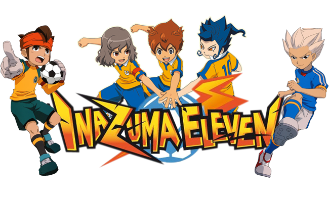
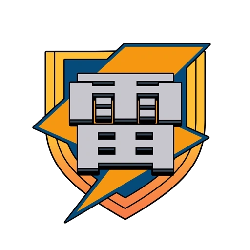
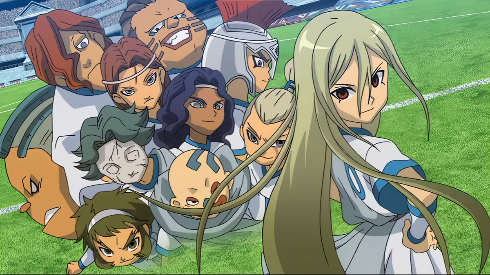

Equipos de la liga
Equipos del Torneo Fútbol Frontier (Primera Temporada)
- Raimon (protagonistas)
- Royal Academy (Imperial)
- Occult Junior High (Espectros)
- Brainwashing Junior High (Cerebros)
- Shuriken Junior High (Ninjas)
- Farm Junior High (Granjeros)
- Zeus Junior High (Dioses)

Equipos de la liga
Equipos de Aliea Gakuen (Segunda Temporada)
- Raimon
- Genesis
- Epsilon
- Epsilon Remastered
- Prominence
- Diamond Dust
- Gemini Storm

Equipos de la liga
Equipos de FFI (Fútbol Frontier Internacional, Tercera Temporada)
- Inazuma Japan (Equipo principal)
- Orpheus (Italia)
- Fire Dragon (Corea del Sur)
- Little Giants (Estados Unidos)
- Knights of Queen (Inglaterra)
- The Empire (Argentina)
- Unicorn (Estados Unidos)